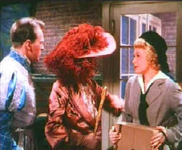

|
Perils of Pauline/B,C+ |
|
Roan/1948/ |
With the impending release of Annie Get Your Gun, it might be a good time to take a gander at high energy star Betty Hutton in The Perils of Pauline, a comic musical effort that features the incendiary blonde's patented "out there" style.
 |
| Pearl before Pauline. ©Roan |
The chronicle of the career of silent
star Pearl White, the film takes easy liberties with fact and
concentrates on fancy. The early scenes, as the innocent Pearl
is swept into the film business with daring do are the most fun.
Betty Hutton provides ample broad humor for her character, while
John Lund is the love interest as ham actor Michael Farrington.
Lund is not exactly an electric screen presence.
George Marshall's direction is entertaining,
brisk and straight forward. Nothing fancy, just let Betty do her
thing. The musical numbers are lots of fun with sharp lyrics by
Frank Loesser and music by Robert Emmett Dolan. Betty can really
belt out a tune.
Supporting roles range from the
expansive performance of Billy De Wolf as Pearl's actor buddy
Timmy Timmons. William Demarest lends his usual sturdy gruff
support. A number of former silent film stars get some
screen time recreating familiar pratfalls and the direction
by
The
color is far too hot and quite a few scenes look soft. Black are
compressed, losing detail, and some bright scenes bloom
slightly. Sharpness is at an acceptable level and edge ringing
is at a minimum. Still, this is a rich three-strip Technicolor
production, and the best news is there appears to be little
color shifting. The mono soundtrack suffices to deliver Hutton's
vocals with rough voice in tact.

Preston Sturges was Hollywood's resident comic genius for more than a decade. His movies are timeless. Click on his image to read all about it.

The Movie Poster Archive include extensive poster images from the films of stars like Susan Hayward, Kirk Douglas, Katharine Hepburn and many more. This month's featured star is Frank Sinatra.

They may
be judgmental, but that's the point, isn't it. Lots of DVD reviews
plus news and more.
Click on the link to visit the judge's chambers.
Imaging
Science Foundation
The Imaging Science Foundation promotes
proper standards in home theater viewing. ISF trained
technicians offer monitor calibration services to consumers. The
difference in a properly calibrated monitor can be
astounding. Click on the image to find an ISF member near you.
 Images
is a non-commercial Web site created for everyone
who enjoys movies and popular culture. Images is
published quarterly; however, new reviews will
appear each week, so check back often.
Images
is a non-commercial Web site created for everyone
who enjoys movies and popular culture. Images is
published quarterly; however, new reviews will
appear each week, so check back often.
 Sight
and Sound Magazine is the venerable voice of The British Film
Institute. The site includes articles and film reviews. A great
resource in print and on the Internet.
Sight
and Sound Magazine is the venerable voice of The British Film
Institute. The site includes articles and film reviews. A great
resource in print and on the Internet.
 Large variety of movie posters for sale now specializing in Polish and Japanese paper.
Easy interface and a Soho gallery storefront.
Large variety of movie posters for sale now specializing in Polish and Japanese paper.
Easy interface and a Soho gallery storefront.